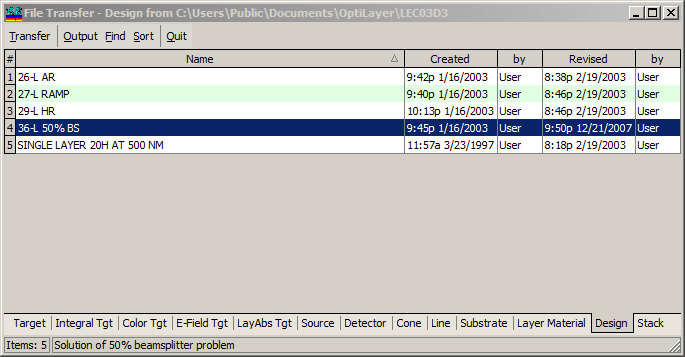

File Transfer dialog
File Transfer dialog
Navigation: OptiLayer Menu Commands > File Menu > File Transfer >
File Transfer dialog
` <idh_select_directory.html>`__ ` <idh_file_transfer.html>`__ ` <idh_file_backup.html>`__
The File Transfer utility enables the exchange of data files between different Problem directories, with data always being transferred to the current directory. Before entering the File Transfer mode, you are prompted to select a data source in the Select Directory window.
You can transfer multiple database files (Target, Substrate, etc.) simultaneously by selecting them with the mouse (use Ctrl and Shift keys for various multi-select options similar to other Windows programs). After selecting the files in the File Transfer dialog, press the Transfer button to complete the transfer operation.

The Find command activates the search feature, simplifying the selection of files using a search pattern. You can also request a different Data Sorting by using the Sort button or create a Text Output of a data file using the Output button. If you wish to transfer additional data from the same directory, you can simply select the desired item and repeat the Transfer operation without restarting the File Transfer. To change the source directory, you must close the File Transfer window and restart the File Transfer operation from the main menu once again. The Quit button closes this window.